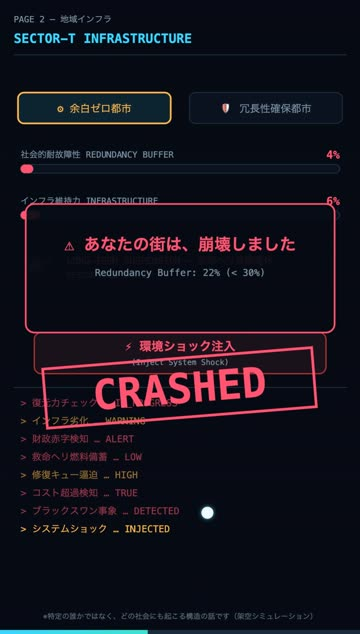
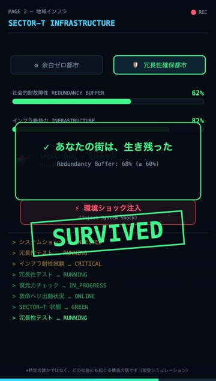
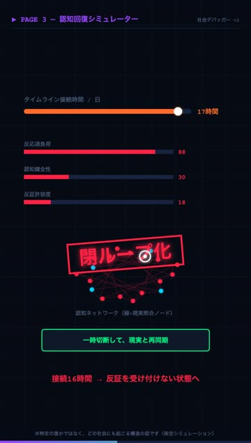
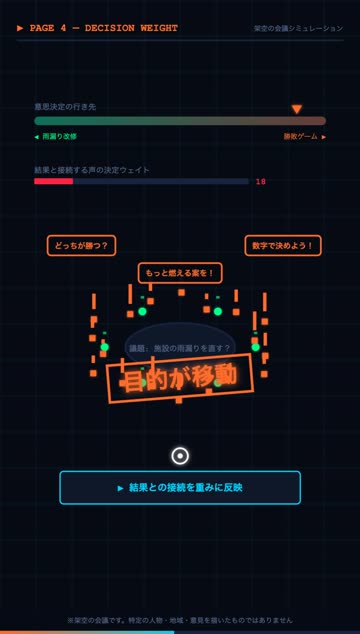
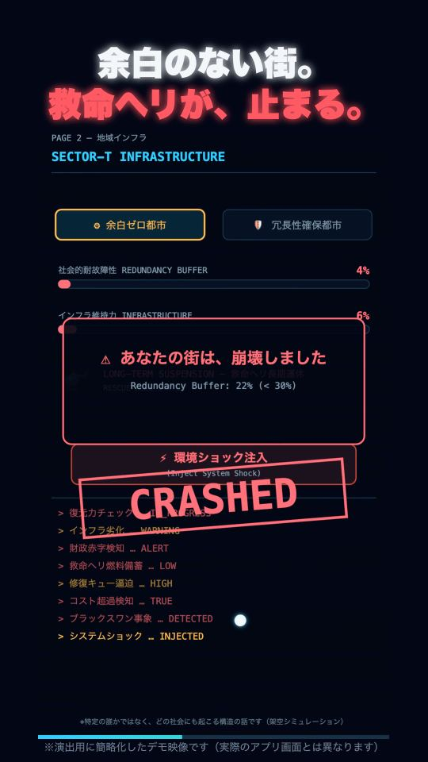
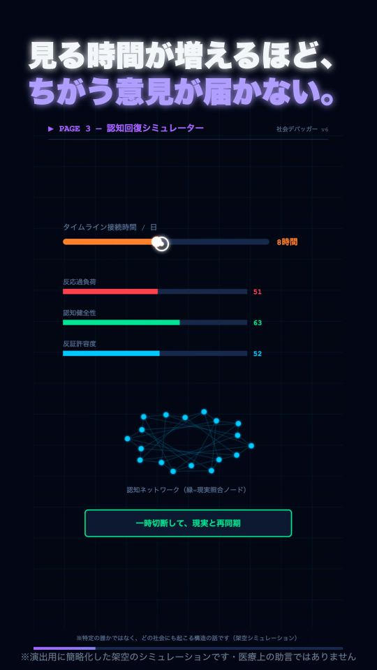
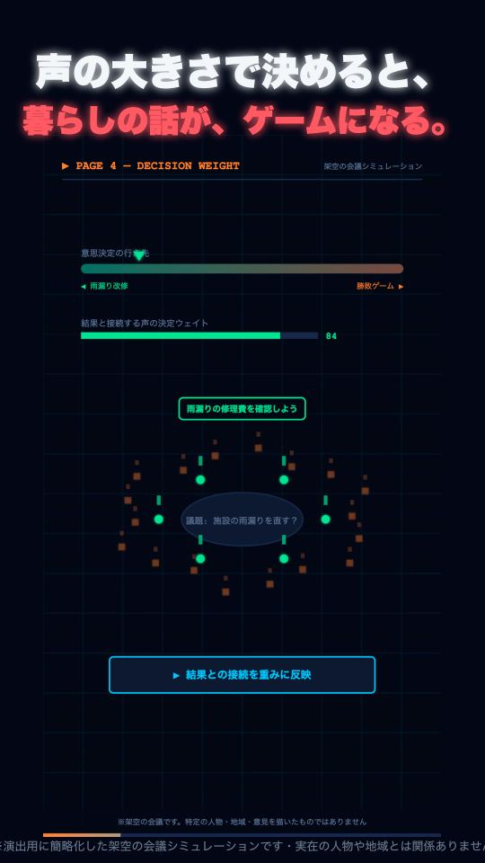
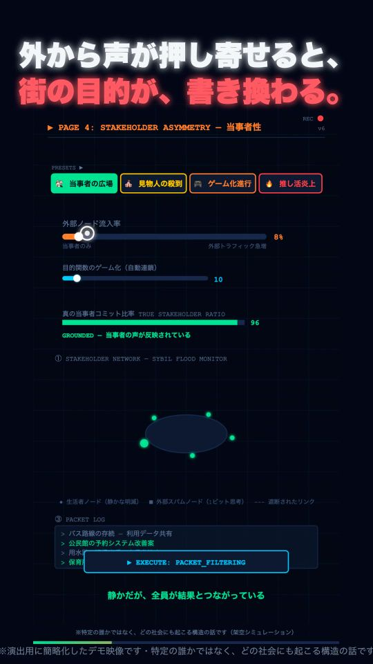

Cascade failure
ひとつ壊れても、
社会は倒れない。
倒れるのは、上の層の壊れが、下の層へ伝わったとき。4つの層が、つながって壊れていきます。
Layer 1
情報空間
断片化した情報と対立のフレームが、合意をつくる力を削っていく。
Layer 2
地域インフラ
予備の削減と担い手の喪失。平時には見えないまま、余白が消えていく。
Layer 3
個人の認知
見る時間が増えるほど、ちがう意見が届かなくなる。
Layer 4
当事者性
声の大きさで決めると、暮らす人の話が、勝ち負けのゲームに変わる。
あなたの街は、どこから壊れるか。
Same shock, two endings
同じ災害。
崩れる街と、生き残る街。
ちがいは、ふだんは「むだ」に見える余白を、残していたかどうか。


※演出用に簡略化したデモ映像です（実際のアプリ画面とは異なります）。
Break it. Then fix it.
壊して、直す。
変えるのは、人の性格ではなく、しくみの条件。


※演出用に簡略化した架空のシミュレーションです。医療上の助言ではありません。特定の人物・地域・団体を支持したり批判したりするものではありません。
Watch
動画で見る
どれも30秒ほど。押すと YouTube で開きます（音が出ます）。

社会は、壊れる。PAGE 2 — 余白のない街に、災害が来たら
つながっているのに、見えなくなる。PAGE 3 — 個人の認知
6人の会議に、1000の声。PAGE 4 — 決め方の重み
その声は、結果を引き受けるか。PAGE 4 — 当事者性※演出用に簡略化した架空のシミュレーションです（実際のアプリ画面とは異なります）。医療上の助言ではありません。特定の人物・地域・団体を支持したり批判したりするものではありません。音声: VOICEVOX:玄野武宏 / BGM: Suno で作成
なら、
デバッグしろ。
あなたの街は、生き残れるか。
無料・登録なし・広告なし。ブラウザで約60秒。
授業で使う
公共・情報I・探究の時間に、そのまま使える材料をそろえています。
- 教員向けガイド — ねらい、進め方、想定される反応。A4で印刷できます
- 投影スライド — 9枚。ブラウザだけで動き、JavaScript が無効でも読めます
- 生徒用ワークシート — 予想 → 実験 → 観察 → 考察の型。書き込み用
この教材が守っていること
社会の壊れ方を扱う以上、書き方そのものに責任があります。
- 実在の地名・人名・進行中の政局を出しません。批判でも称賛でも扱いません。抽象化した型で語ります。
- 特定の誰かの話にしません。どの社会にも起こりうる構造の話として設計しています。
- データを集めません。登録も不要で、操作の記録は端末の外に出ません。
- 数式と閾値を公開しています。結論だけでなく、そこに至る計算を検証できます。
作っている人へ
オープンソースです。使った感想がいちばん役に立ちます。
バグ報告・改善提案・授業で使った話を歓迎します。うまく言葉にならなくても構いません。